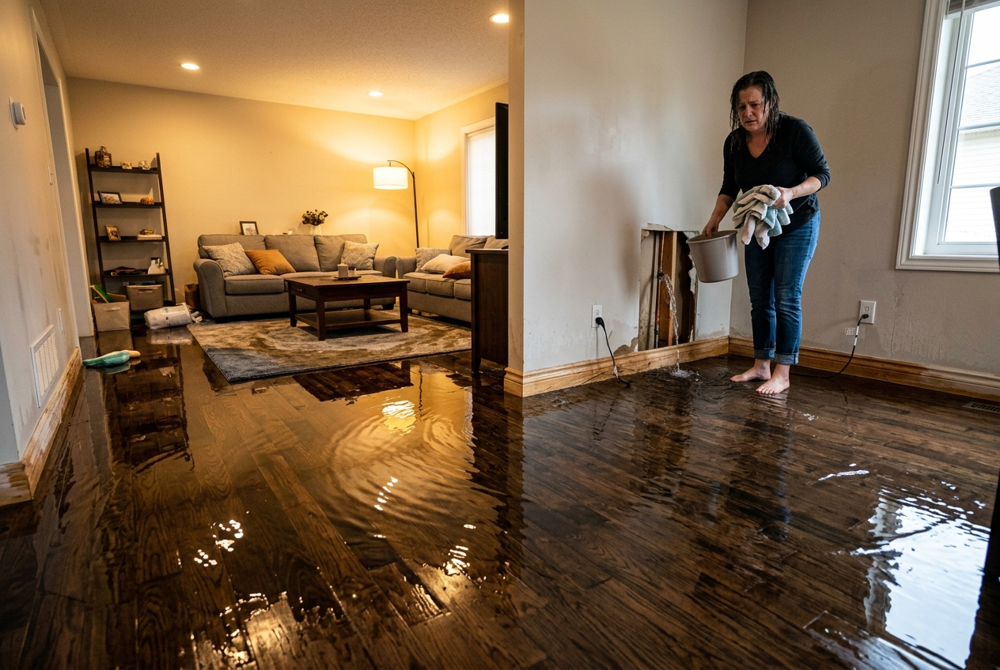
Water DamageWhat to Do in the First 60 Minutes After Sudden Water Damage
Critical immediate actions to prevent catastrophic structural collapse, avoid fatal electrocution, and preserve insurance rights after a pipe burst.

Water DamageCritical immediate actions to prevent catastrophic structural collapse, avoid fatal electrocution, and preserve insurance rights after a pipe burst.
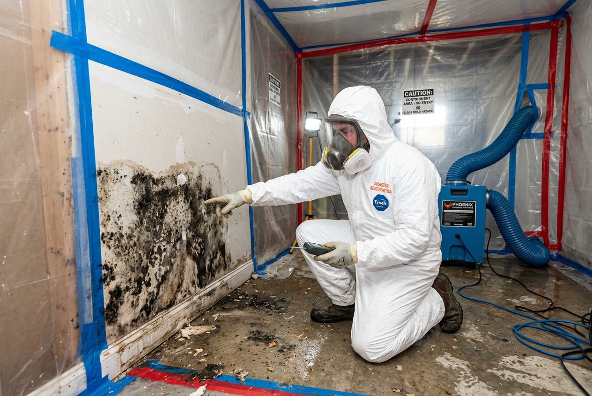
Mold PreventionThe biological 24-to-48 hour germination window explained. Learn why bleach fails on porous drywall and how psychrometric drying stops spores permanently.
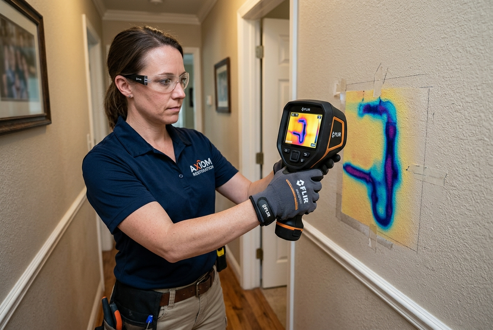
Home SafetyFrom faint musty odors and warped baseboards to unexpected municipal water bill spikes. How infrared thermography identifies slow pinhole leaks.
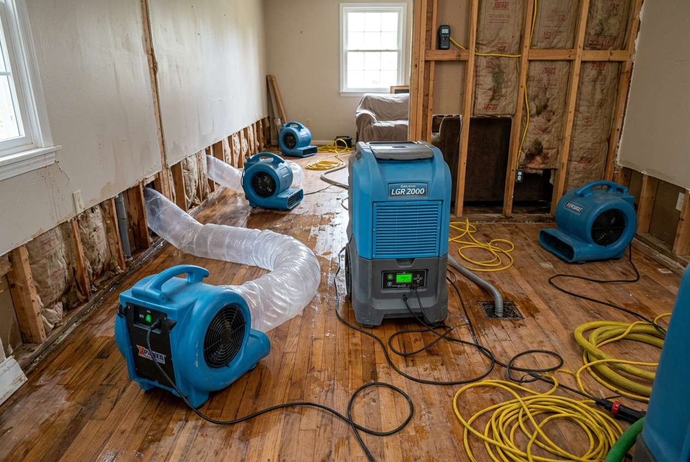
Flood RestorationAn inside look at psychrometry, vapor pressure differentials, and how industrial Low-Grain Refrigerant (LGR) dehumidifiers pull moisture from framing.
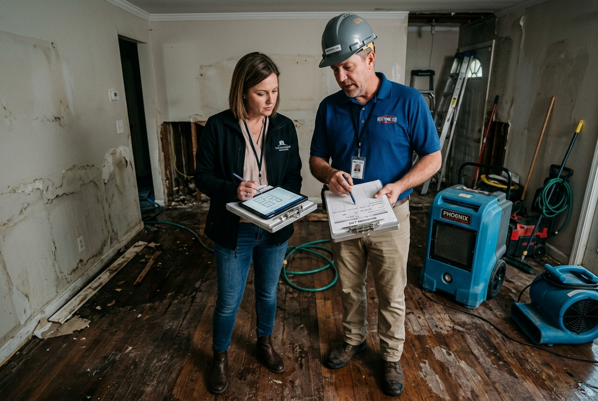
InsuranceAvoid common claim denial pitfalls. Learn the exact difference between sudden vs. gradual damage, and how certified dry logs ensure 100% reimbursement.
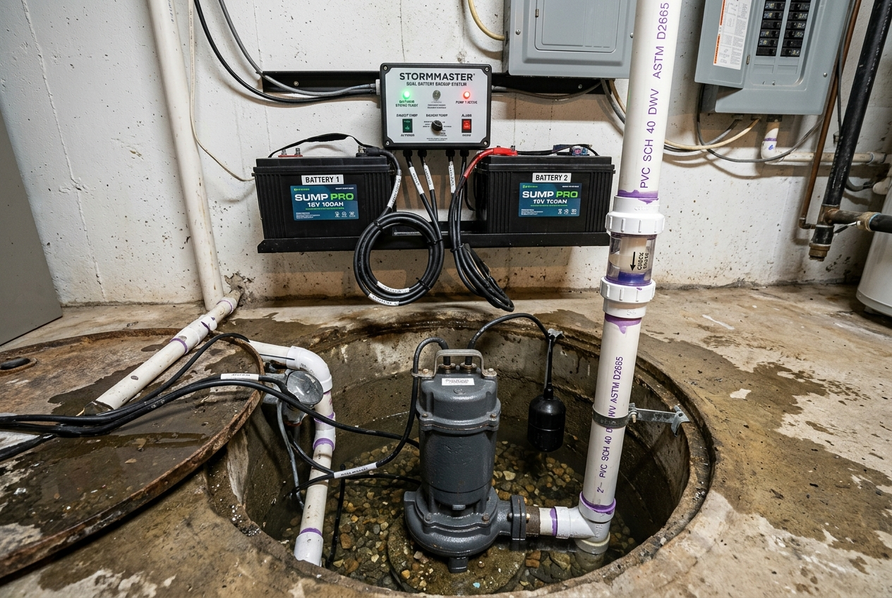
Flood RestorationThe homeowner's guide to dual-pump systems, marine-grade battery backups, check valve testing, and exterior drainage grading before severe seasonal storms hit.
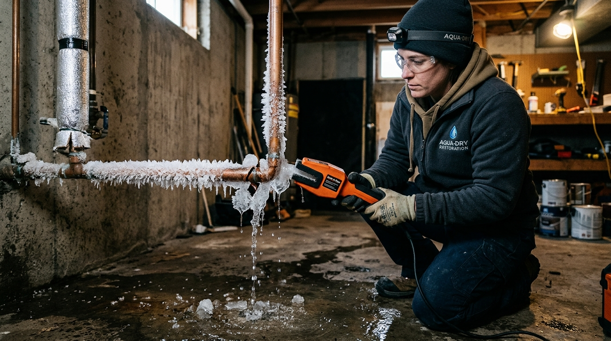
Water DamageWhen freezing temperatures cause interior copper and PEX lines to burst, learn safe thawing techniques and structural pressure release procedures.
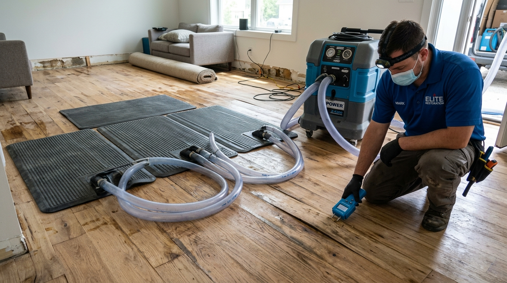
Water DamageExploring injected vacuum mat systems and negative-pressure floor drying that salvage exotic hardwoods without expensive floorboard replacement.
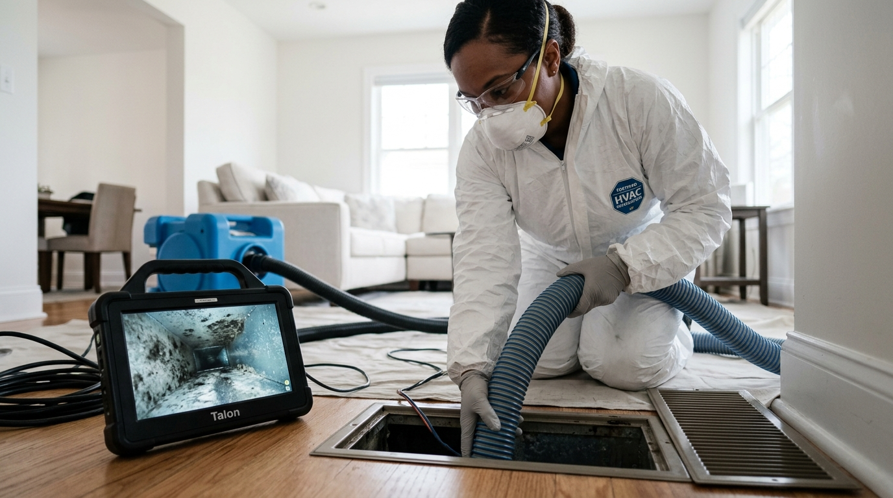
Mold PreventionHow contaminated air handler coils and condensation pans blow invisible mycotoxins throughout multi-story homes, and how HEPA sanitization purges ductwork.
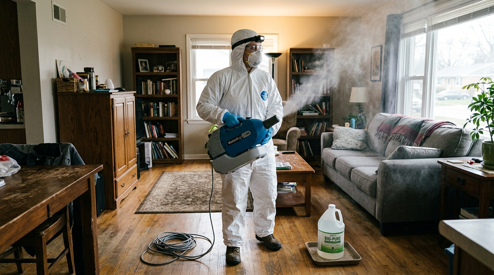
Mold PreventionWhy hospital-grade thymol and botanical formulations eradicate 99.99% of fungal colonies with zero volatile organic compounds (VOCs) for children and pets.
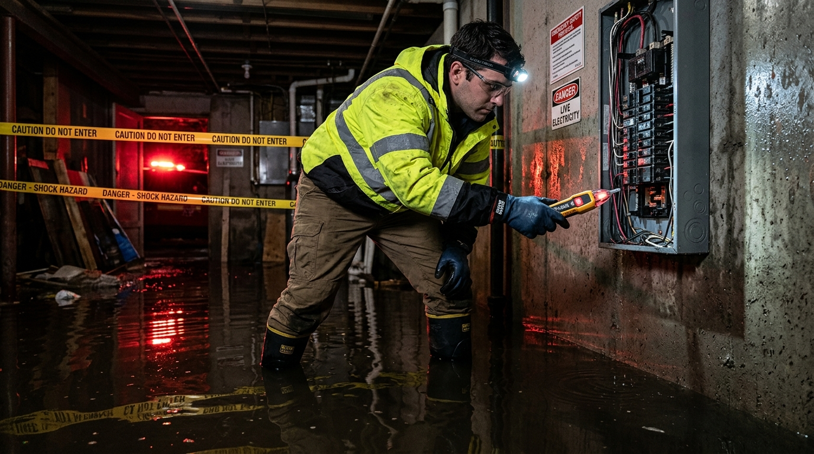
Home SafetyWalking through standing floodwater poses lethal electrocution risks. Learn lockout-tagout procedures, arc-fault testing, and professional panel safety rules.
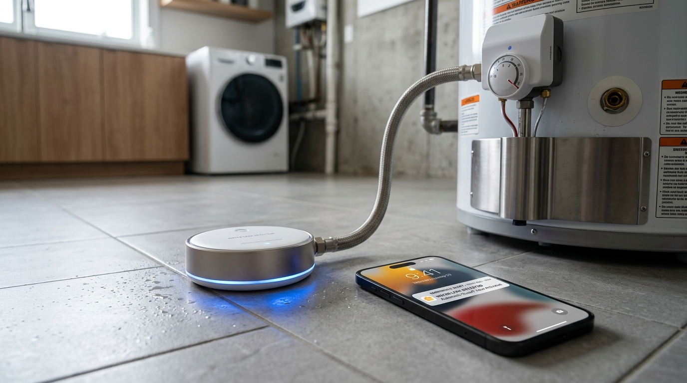
Home SafetyReviewing ultrasonic whole-home automatic shutoff valves and wireless moisture sensors that instantly alert your smartphone before a minor leak ruins a subfloor.
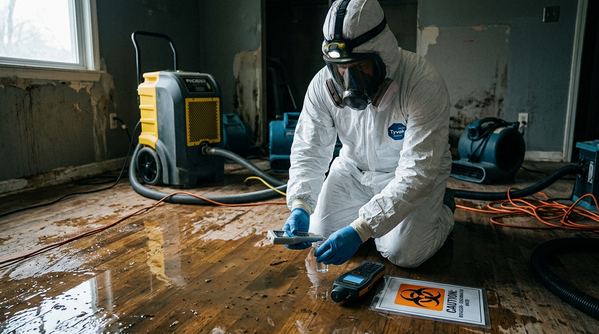
Flood RestorationClean water, gray water, and black water classifications decoded. Why sewer backup and overland river flooding mandate complete porous tear-outs.
Demystifying the standardized software used by 95% of adjusters. How to read extraction rates, air mover daily allowances, and thermal imaging invoices.
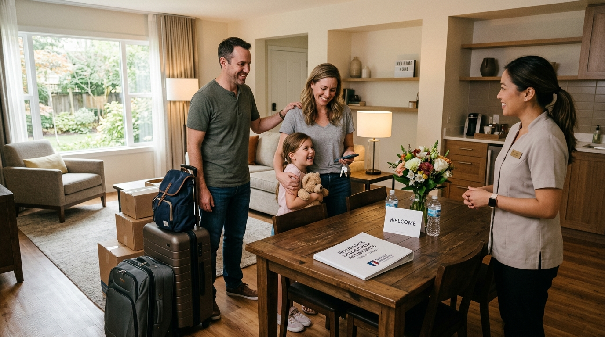
InsuranceIf severe water damage renders your home temporarily uninhabitable, here is how Additional Living Expenses (ALE) reimburse five-star accommodations and meals.
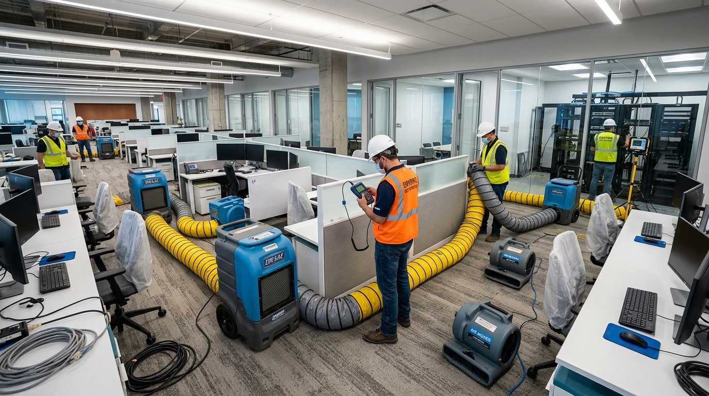
Commercial RecoveryIndustrial desiccant dehumidifiers capable of moving 5,000 CFM of dry air to preserve electronic server racks, inventory, and structural concrete framing.
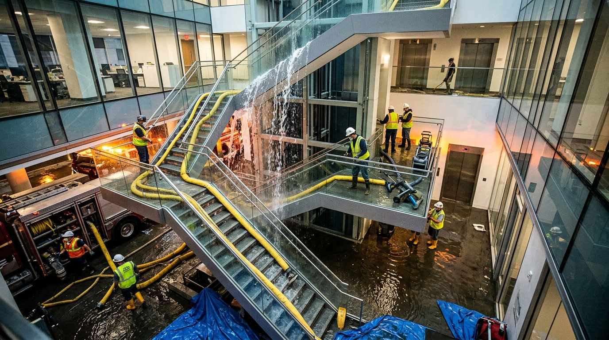
Commercial RecoveryWhen a 12th-story commercial fire sprinkler activates, gravity cascades water across dozens of floors. How gravity extraction shafts and vertical drying control losses.
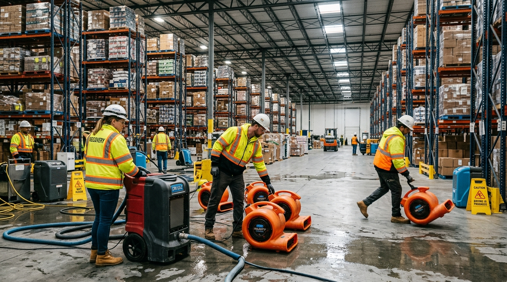
Commercial RecoveryCritical mitigation protocols for inundated industrial facilities—preventing corrugated packaging collapse, wicking in palletized stock, and moisture vapor emission from thick concrete slabs.